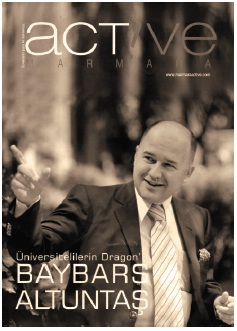

Dragons’ Den
“Misafir umduğunu değil, bulduğunu yer!”
Baybars Altuntaş
9
Dragons’ Den
Dragon’ların belirlenmesindeki en önemli kriter; girişim başarılarının tamamen kendilerine ait olmasıydı. Anadan – babadan kalma sermayelerle kurulan işlerin başındakiler Dragon olamıyorlardı. Yapılan tarife tam uyan biriydim.
Bloomberg HT kanalında BBC versiyonunu zevkle seyrediyordum Dragons’ Den programının. Şu program yapımcılığı işinden anlasam da bu programın Türkiye versiyonunu yapsam diye de aklımdan geçirmedim değil.
22 ülkede Sony Pictures Television tarafından yapılan bu program, her ülkede rating rekorları kırıyordu. İngiltere’de BBC’nin her yıl en çok izlenen programıydı ve son 6 yıldır kesintisiz devam ediyordu. Girişimcileri resmen televizyonun başına kilitliyordu. İngiltere’nin dışında, ABD ve Kanada gibi ülkeler ve yeri geldiğinde 18 ülkede daha girişimcilerin zevkle izlediği programdı. 5 Dragon (ejder) olarak tanımlanan melek yatırımcı, stüdyoya gelen girişimcilerin iş fikirlerini dinliyor, sorular soruyor ve kafalarına yatarsa bu girişimcilerle gidip şirketler kuruyorlardı.
* * *
Bir mail geldi; Türkiye’de bu programın lisansını Sera Film almıştı, pek çok dragon adayı arasından benimle de toplantı yapmak istediklerini belirtiyorlardı. Sera Film’in CEO’su İdil Belli ve Yönetim Danışmanı Mcdbc CEO’su Cem Bülent Ünal ile tanıştım, gelen teklifi kabul ettim ve sözleşmeyi imzaladım. Madem yeni Baybars Altuntaş’ların çıkmasını hedefliyordum ülkemde, işte bu program çok doğru bir platformdu bu misyonum için.
Dragon’ların belirlenmesindeki en önemli kriter, girişim başarılarının tamamen kendilerine ait olmasıydı. Anadan – babadan kalma sermayelerle kurulan işlerin başındakiler Dragon olamıyorlardı. Yapılan tarife tam uyan biriydim.
Programa katılmak isteyen girişimcilerle stüdyoda ilk kez karşılaşıyorduk. İlk sezon sabah 07.30’da Ciner Grubu Sefaköy Stüdyolarında oluyorduk ve yeri geldiğinde akşam 20.00’ye kadar sürüyordu çekimler. Yorucu oluyor muydu? Her gün 10 girişimciyi değerlendiriyor ve nereden baksanız 10 saat boyunca her biri için kafa patlatıyorduk. Ancak, her gelen girişimci yepyeni bir projeyle geldiği için sanki çekimlere yeni başlamışçasına dipdiri bir şekilde sorgulamaya başlıyorduk her girişimciyi.
Dragons’ Den programından tüm girişimciler şimdiye kadar pek çok şey öğrendi, çok faydalı bir program oldu. Öte yandan ben de çocukluğumdan beri kafamı kurcalayan bir sorunun cevabını almış oldum Dragons’ Den’de bir dragon olarak:
Çocukluğumda iki önemli sanatçı vardı; Zeki Müren ve Bülent Ersoy. Basına sürekli birbirine sataşmaları yansırdı. İkisi de ülke çapında sanatçılardı, ikisi de bir numaraydı. Kavga etmelerine anlam veremezdim, içimden ‘neyi paylaşamıyorlar acaba’ derdim. Dragons’ Den’de 5 yatırımcıdan biri olunca bunun sebebini anladım.
Program sırasında her şey herkesin istediği gibi gitmeyebiliyordu. Her girişimci büyük hayallerle Dragons’ Den’e geliyor ancak bir kısmı hedefine ulaşıp çıkıyordu programdan.
Dragons’ Den, Türkiye’de girişimcilik ve melek yatırımcılık kavramlarının yerleşmesi açısından bir kilometre taşı oldu. Girişimcilik ile ilgili bir programın ne kadar çok ilgi çekeceği de aslında benim için bile sürpriz oldu. Programın henüz 2. Bölümü yayınladığı hafta, otoparkçıların benden ücret almamaya başlaması, büfecilerin “Dragon Abimiz gelmiş” deyip çay ikram etmesi, taksi şoförlerinin fotoğraf çektirme istekleri, anaokulundan arkadaşlarımın bile beni bulmaları ve bir anda facebook arkadaş sayımın binleri bulması, programın çok tuttuğunun ve daha da tutacağının göstergeleriydi.

Toplam 2 sezon ve 29 bölümün sonunda neredeyse konuşma yapmak üzere beni üniversitelerine davet etmeyen öğrenci kulübü kalmadı. Hayat hikâyem üniversite öğrencileri için gerçek bir ilham kaynağı olmuştu. Cebinde 400 Doları olan bir üniversite öğrencisinin dünyanın 110 Dragon’undan biri olabilmesi tüm üniversite öğrencilerinin ilgisini çekmişti. Stüdyoya gelen üniversite öğrencilerine de yatırım yapmış olmam işin iyice tuzu biberi oldu. Marmara Üniversitesi öğrencileri beni “Üniversitelilerin Dragon’u” seçtiler.
Girişimcilere Gerçekten Yatırım Yaptık mı?
Dragons’ Den programında hoşuma giden o kadar çok şey oldu ki, hoşuma gitmeyen şeyler açıkçası bunların yanında solda sıfır kalır. Bu yüzden, hoşuma gitmeyen ve hiç de tasvip etmediğim kamera arkası olaylara değinmeyeceğim, onlar bende kalsın. Biz girişimciler bardağın hep dolu kısmına bakmalıyız, boş kısmı üzerine vakit harcamak pek de akıllı girişimcinin işi olmasa gerek.
Bu bölümde sosyal paylaşım sitelerinde cevabı en çok merak edilen soruları cevaplayacağım:
Genelde ilk soru, girişimcilerle ve projeleriyle ilk kez stüdyoda mı karşılaştığımız oluyor. Evet, ilk kez stüdyoda karşılaşıyoruz. Hatta kendileri stüdyoya girene kadar üstü siyah örtülerle kapandığı için sunum yapacakları dokümanları bile görmüyoruz. Girişimciler ayrı bir salona ayrı bir kapıdan alındığı için, bizlerle karşılaşma imkânları da yok. Bunun böyle olması her açıdan iyi oluyor çünkü her girişimci içeri girdiğinde en az girişimci kadar ben de heyecanlanıyorum.
Bir diğer soru da, stüdyoda el sıkıştığımız girişimcilerle şirket kurup bu işleri gerçekten başlatıp başlatmadığımız yönünde. Bu soruyu kendi adıma cevaplamam gerekirse, evet... Ben her biriyle hemen masaya oturuyor ve zaman kaybetmeden işlemleri başlatıyordum.
Stüdyoda el sıkıştığınız girişimcilerin sonucunun ne olduğuna gelince;
Bu soruyu detaylı bir şekilde ve her yaptığım ortaklık için ayrı ayrı cevaplamak istiyorum. Çünkü aslında pek çoğunuzun asıl bunu merak ettiğini biliyorum.
Kâğıttan Tuğla Projesi Su Aldı
Beni hayal kırıklığına uğratan ve gereksiz yere en çok zamanımı alan proje oldu. Girişimcimiz, gereksiz yere bana paralar harcattı ve benim konuya hâkim olmamam sebebiyle üniversiteden alınması gereken esas raporu almayıp, hiç de önemli olmayan raporlarla beni yatırım yapmaya yönlendirmek istedi.
Yıldız Teknik Üniversitesi’nden alınan Kâğıttan Tuğla Raporları olumluydu. Programı izleyenTürkiye’nin ve dünyanın önde gelen tuğla üreticilerinden olan şirketin CEO’su beni arayıp, bu projeye ortak olmak istediklerini, ancak raporları görmek istediklerini söyledi. Girişimcimizin stüdyoda 15 gün içinde alınacağını söylediği raporları 3 ay sonra aldık. Girişimcimiz kimya mühendisi olduğu için raporların kısa değerlendirmesini bana yaptı ve raporlar çok olumlu dedi.
Ankara’ya gittik. Şirketin tüm üst düzey yönetimi oradaydı. Numuneyi bir de kendi laboratuarımızda test edelim dediler. Ertesi sabah Genel Müdür telefondaydı.
“Baybars Bey maili gördünüz mü?”
“Gördüm de ne olduğunu anlayamadım.”
“Dün akşam bıraktığınız numune tuğlalar...”
“Hadi canım oradan!”
Tuğlalar 2 saat içinde suyun içinde şişmişlerdi... Girişimcimizi aradım,“su dayanıklılık raporu nerede?” dedim.
“Bir tek onu almamışız Baybars Bey” dedi.
“Artık almaya da gerek yok” dedim.
Yaşam Koçluğu Show’a Dönüştü
Bu projeye mentorluk yatırımı yaptım. Projenin bir kitap projesinden çıkarılıp, bir seminer projesine dönüştürüldüğü takdirde iş yapacağını söyledim – nitekim öyle oldu.
Girişimci arkadaşımız ilk semineri stand-up show şeklinde ve ücretli olarak Beşiktaş Akatlar Kültür Merkezinde verdi. Salon tıka basa doluydu. Gayet başarılı geçen ilk show’dan sonra kendisini Yıldız Teknik Üniversitesi Öğrenci Kulübü ile tanıştırdım, üniversitedeki show da gayet güzel geçti. Daha sonra Beyoğlu’nda özel bir tiyatro ile anlaşarak düzenli olarak show’una devam etti.
Mentorluk yatırımının önemi açısından güzel bir girişim oldu.
Pilates Akademi Kendi Kendine Devam Etti
Yatırım yaparken, sistemin franchising sistemiyle Türkiye çapında yaygınlaştırılması durumunda, bu işten para kazanılabileceğini belirterek yatırım yapmıştım.
Şirket kuruldu, işler başladı ve anladım ki girişimcimizin franchising sistemine geçebilmesi için alması gereken yol çok. Bu durumda yatırım yapma sebebim de ortadan kalktığı için, hisselerimi girişimcimize devrederek ortaklıktan çıktım. Ancak ortaklıktan ayrılmadan evvel, girişimcimizin ihtiyacı olan yatırım miktarı kadar uzun vadeli aylık ödemeleri düşük miktarlarda bir krediyi iyi ilişkilerimin olduğu bir bankadan temin ettirerek, girişimcimizin mağdur olmasını da önlemiş oldum. Girişimcimiz, hayalindeki pilates akademiyi böylelikle Nişantaşı’nda açmış oldu. Esas itibariyle, her ay ödenecek bu minik kredi taksitini, şirket zaten ödeyebilecek bir iş planına sahip olduğu için, şirket ortağı olarak bana her yıl kâr payı vermesini de etik anlamda pek doğru bulmadım.
Ayaş Domatesi Tarlada Kaldı
Tarım Bakanlığı’ndan maddi ve manevi destek alırsak, şirketi kurar hemen üretime başlarız dedim. Milli menfaatlerimiz açısından çok önemli olarak gördüğüm bu girişimde, şöyle bir gerçek ortaya çıktı: “Ayaş” adı anonim bir isim olduğu için bu isimle domates tohumunu kayıt altına almak mümkün değildi. Yani ben “Ayaş Tohumuna” yatırım yaptığımı sanıyordum ancak bu isimle eğer üretim yapılırsa, rekabet hukuku açısından çok ciddi sorunlar yaşayacağımız ortaya çıktı. Girişimcinin önerdiği yatırım bütçesiyle de yepyeni bir marka ortaya çıkarma imkânı yoktu. Böylelikle şirketi kurma aşamasına geçemedik.
Lastiklere Otomatik Kar Zinciri Projesi
Kamyona Takıldı
Baba – oğul gelmeleri beni çok etkilemişti. Numune henüz hazır değildi. Benim arabamda da uygulanabileceğini belirttiler ve numuneyi denedikten sonra şirketi kurmak üzere el sıkıştık. Ancak, daha sonra yaptıkları çalışmalarda benim arabamda uygulanamayacağını anladılar. Sadece kamyon gibi yüksek tonajlı araçlarda sonuç verme ihtimalinin olduğu ortaya çıktı. Stüdyoda bahsedilen pazar büyüklüğü bir anda kayboldu. Yaklaşık 6 ay geçmesine rağmen numunede herhangi bir gelişme olmayınca, şirket kurma işlemleri gerçekleşmedi.
Inploid Ortaklara Takıldı
Şirketi kurduk, girişimcilerin talep ettiği gerekli sermayenin tamamı sağlandı. Ben kendi payıma düşen sermaye miktarını ödedim. Ancak ilk yönetim kurulu toplantısında iş planı üzerinde ortaklarla anlaşamayınca, hisselerimi diğer ortaklara devrederek exit ettim, çıkış yaptım.
Karton Ambalaj Baybars Altuntaş Kurallarına Takıldı
Şirketi kurduk, gerekli sermaye sağlandı, ben kendi payıma düşen sermaye miktarını ödedim. Ancak benim iş yapma ve para kazanma kurallarım diğer ortakların kurallarıyla örtüşmedi. Ben “önce sat, sonra harca” kuralımla bu işin de yürümesini istedim. Numune hazır olduğu için ilk sipariş yazılı olarak alınmadan yatırımın gerçekleşmemesi üzerinde ısrar ettim. Ortaklarla bu konuda hem fikir olamadık, hisselerimi diğer ortaklara devrederek exit ettim, çıkış yaptım.
Sanırım Inploid ve Karton Ambalaj yatırımlarımdaki çıkış hızıyla, dünyanın en hızlı exıt eden melek yatırımcısı unvanını da böylelikle almış oldum.
Uni Summer Life Askerlik Molası Verdi
Şirketi kurduk. TÜRSAB A Grubu Seyahat Acentesi belgesini aldık. Beyoğlu’nda ilk ofis açıldı. Bursa’ya Ocak ayında, Antalya’ya da Mayıs ayında turlar gerçekleşti. Ancak, girişimcilerimden biri askere gitme kararı aldı ve askere gitti. Diğerinin de sağlık problemleri ortaya çıktı. Şimdi acenteye yeni bir rota belirlemeye çalışıyoruz.
Benbirgezginim.com Başka Bahara Kaldı
İstanbul’da, yine Dragons’ Den girişimcileri ile beraber kurduğumuz TÜRSAB Belgeli A Grubu Seyahat Acentesi’ne bu projeyi monte etme kararı almıştık. Ancak, diğer şirketin ortaklarından biri askere gidip diğeri de rahatsız çıkınca projemiz gerçekleşmedi.
Saç Çıkaran Şampuan Benim Saçımı Çıkaramadı
Girişimci, benim saçlarımın 60 gün içinde çıkmasını garanti etti. Beyoğlu 7. Noterinin huzurunda benim kafamda saç tespiti yapıldı. 2 ay boyunca söz konusu şampuanları kullandım, bu süre sonunda yine noter huzurunda yapılan tespit sonucunda, saçlarımın çıkmadığı anlaşılınca; şirket kurma işlemi gerçekleşmedi.
İki Konulu Test Kitabı Girişimcilerini Bekliyor
Deulcom’da toplantımızı yaptık. İlk kitabı eylül ayında çıkarmak üzere anlaştık. Ancak girişimcimizden o toplantıdan beri herhangi bir ses seda çıkmadı.